ACORNAUT · PRODUCTION ART REVIEW
Twenty-six places to fly
Each zone owns five different planets and two or three debris materials. These are the production sprites, including the retained originals. The backgrounds remain unchanged.
130 exclusive planets55 exclusive debris sprites101 + 28 new paintings260 missions preserved
The Star Chart and flight share one roster. Flight uses a shuffled five-planet bag; the map shows all five across each zone's ten missions. A faint cached edge glow or shadow appears only where a planet blends into its local background. The family panels below are palette studies; the runtime images show the game renderer.
Implementation and verification notes · Exact roster · Production asset hashes
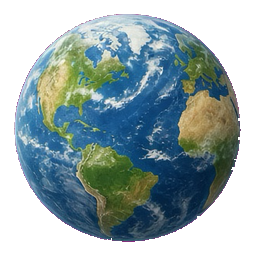
HomeworldRetained original · planets/0.pngUse the existing artwork unchanged.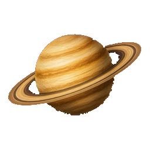
Ochre RingsRetained original · planets/1.pngUse the existing artwork unchanged.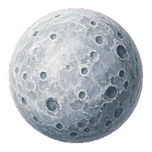
Silver MoonRetained original · planets/2.pngUse the existing artwork unchanged.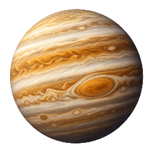
Banded GiantNew painting · planets/33.pngochre and cream gas bands with one broad oval storm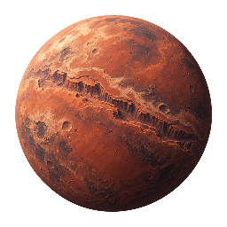
Red FrontierNew painting · planets/34.pngmatte dusty red plains and a single long canyon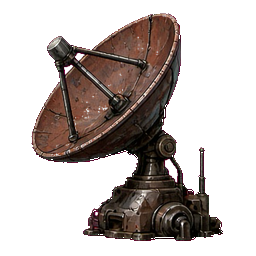
Lost AntennaRetained original · debris/1.pngUse the existing artwork unchanged.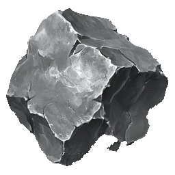
Nickel FragmentRetained original · debris/21.pngUse the existing artwork unchanged.Flight renderer at phone size
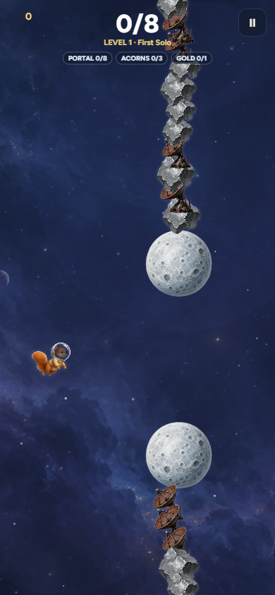
 Teal CradleRetained original · planets/4.pngUse the existing artwork unchanged.
Teal CradleRetained original · planets/4.pngUse the existing artwork unchanged.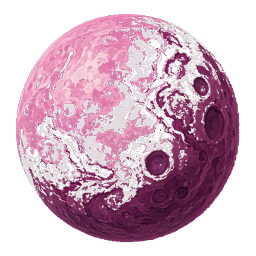
Rose MoonRetained original · planets/8.pngUse the existing artwork unchanged.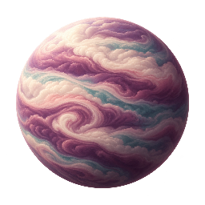
CloudseedNew painting · planets/35.pngplum and cream softly folded cloud layers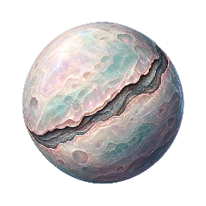
Pearl CocoonNew painting · planets/36.pngpale compact sphere with a dark curved shell seam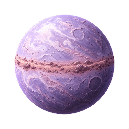
Accretion PearlNew painting · planets/37.pnglavender solid globe with a short dusty equatorial belt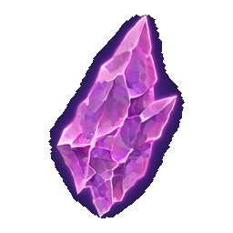
Rose Seed CrystalRetained original · debris/9.pngUse the existing artwork unchanged.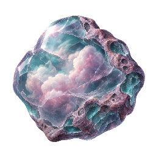
Cloudglass NoduleNew painting · debris/27.pngrounded plum stone enclosing cloudy pale inclusionsFlight renderer at phone size
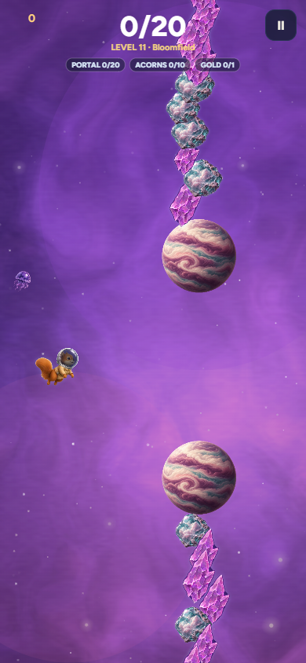
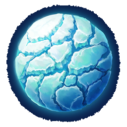
Ice CrustRetained original · planets/31.pngUse the existing artwork unchanged.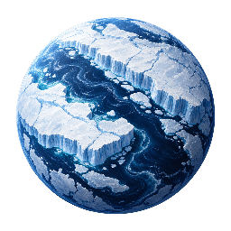
Glacier ShelfNew painting · planets/38.pngblue-black ocean split by thick white glacier shelves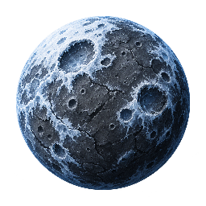
Frosted BasaltNew painting · planets/39.pngcharcoal cratered moon dusted with rim frost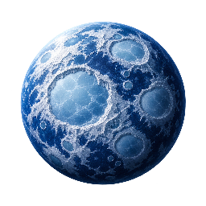
Brine WorldNew painting · planets/40.pngdeep cobalt sphere with pale circular frozen lakes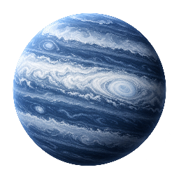
Hail GiantNew painting · planets/41.pngslate gas world with broad white frozen storm bands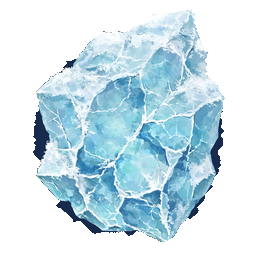
Blue Ice ChunkRetained original · debris/11.pngUse the existing artwork unchanged.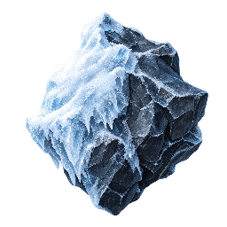
Dark FroststoneNew painting · debris/28.pngdark angular rock with thick white frost on one faceFlight renderer at phone size
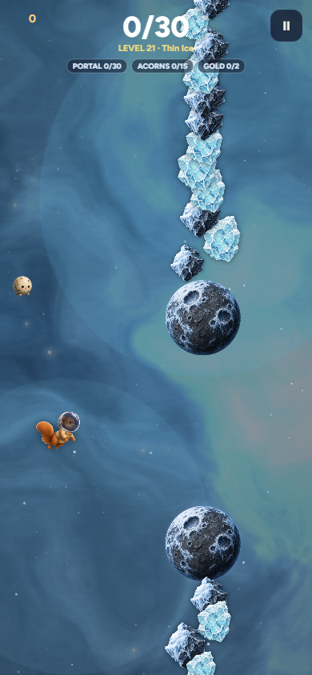
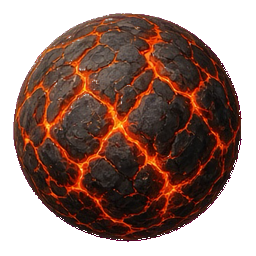
Magma HeartRetained original · planets/3.pngUse the existing artwork unchanged.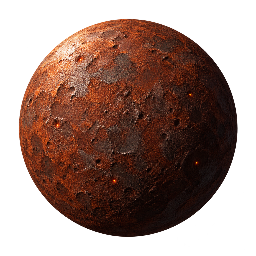
Iron CinderNew painting · planets/42.pngoxidized iron globe with sparse hot pits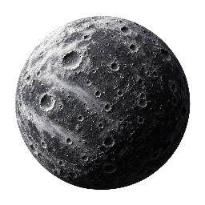
Ashfall MoonNew painting · planets/43.pngmatte charcoal cratered sphere with ash-white rims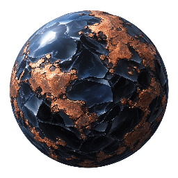
Quenched SlagNew painting · planets/44.pngblue-black glassy globe with dull copper scabs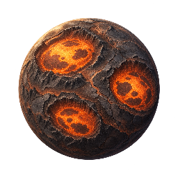
Vent WorldNew painting · planets/45.pngdark basalt planet with three broad glowing vent basins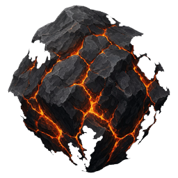
Magma BoulderRetained original · debris/12.pngUse the existing artwork unchanged.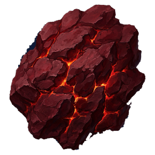
Ember PlateRetained original · debris/14.pngUse the existing artwork unchanged.Flight renderer at phone size
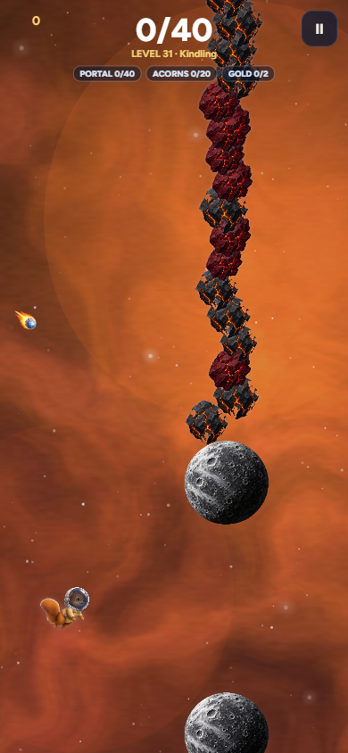
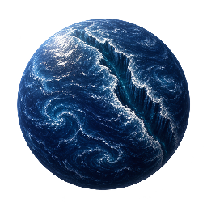
Trench WorldNew painting · planets/46.pngindigo ocean cut by one silver-lit abyssal fault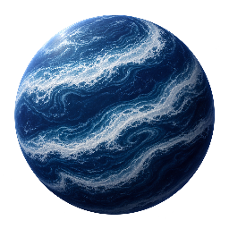
Tidal BandsNew painting · planets/47.pngnavy planet crossed by broad curved pale tidal bands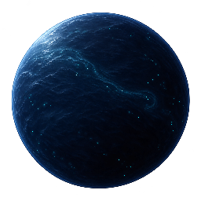
Ink SeaNew painting · planets/48.pngnear-black blue globe with sparse bioluminescent pinpricks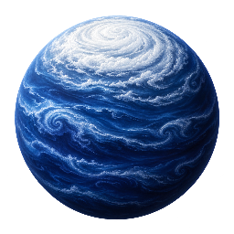
Whitecap GiantNew painting · planets/49.pngdark sapphire gas-sea globe with a dense white storm cap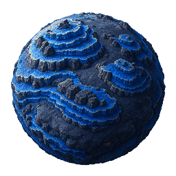
Pressure ReefNew painting · planets/50.pngdark mineral seabed sphere with compact blue ridges and pale edge light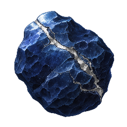
Abyss StoneNew painting · debris/29.pngrounded dense navy stone with a silver fracture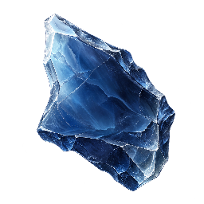
Pressure GlassNew painting · debris/30.pngthick smoky blue fragment with a pale beveled edgeFlight renderer at phone size
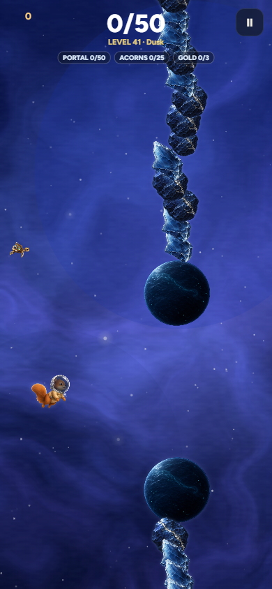
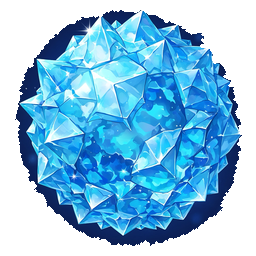
Cyan Crystal CoreRetained original · planets/28.pngUse the existing artwork unchanged.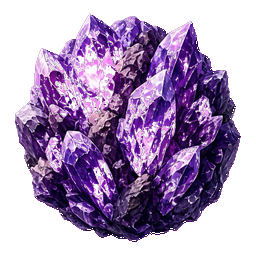
Amethyst CoreRetained original · planets/10.pngUse the existing artwork unchanged.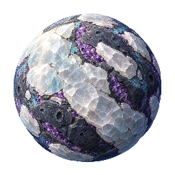
Quartz MantleNew painting · planets/51.pngrounded dark globe studded with broad milky quartz plates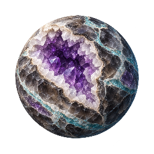
Smoky GeodeNew painting · planets/52.pnground smoky mineral shell with one pale open geode face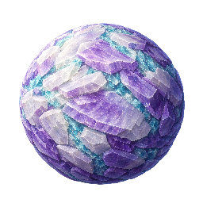
Tabular WorldNew painting · planets/53.pngspherical mineral mass built from short flat lavender crystal plates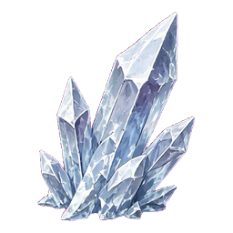
Quartz ClusterRetained original · debris/2.pngUse the existing artwork unchanged.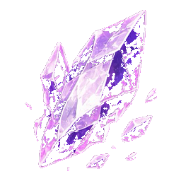
Amethyst ShardRetained original · debris/6.pngUse the existing artwork unchanged.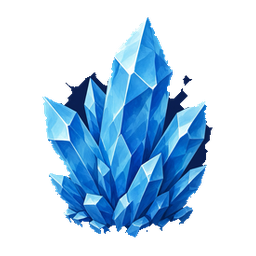
Cyan ClusterRetained original · debris/13.pngUse the existing artwork unchanged.Flight renderer at phone size
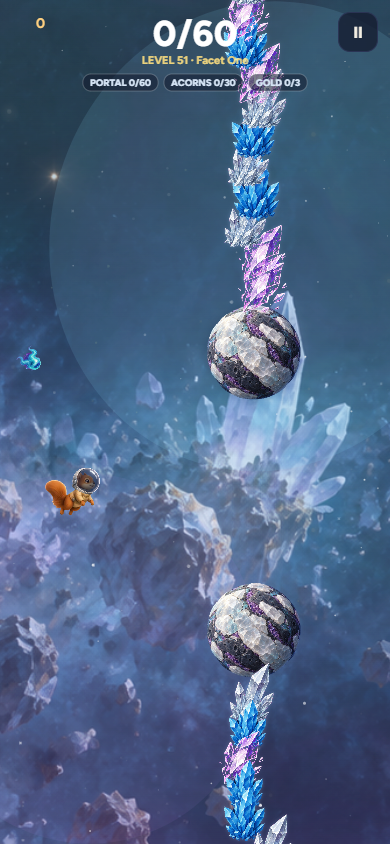
Red CycloneRetained original · planets/21.pngUse the existing artwork unchanged.Scarlet BandsNew painting · planets/54.pngscarlet gas world with broad storm bands and a dark poleIroncloudNew painting · planets/55.pngrust-red cloud planet with slate thunderheadsPale SupercellNew painting · planets/56.pngpale grey atmosphere with one large dark-red storm eyeEmber SquallNew painting · planets/57.pngnear-black globe with sweeping burgundy cloud streaks
Hematite ShardNew painting · debris/31.pngdark red metallic shard with a bright cut faceStormglassNew painting · debris/32.pngsmoky red angular glass enclosing pale streaks
Flight renderer at phone size
Violet Cloud SeaRetained original · planets/30.pngUse the existing artwork unchanged.Dusk RingsRetained original · planets/27.pngUse the existing artwork unchanged.Lavender DunesNew painting · planets/58.pngmuted lavender sand globe with large wind-carved ridgesPlum MarbleNew painting · planets/59.pngdeep plum solid world with thick ivory mineral veinsAmethyst MoonNew painting · planets/60.pngsmooth dark violet cratered globe with a restrained lavender rim
Violet BasaltNew painting · debris/33.pngcompact dark plum rock with a pale broken faceVeined PebbleNew painting · debris/34.pngrounded lavender stone with broad ivory veins
Flight renderer at phone size
Old Grey MoonRetained original · planets/5.pngUse the existing artwork unchanged.Alabaster FaultNew painting · planets/61.pngoff-white sphere with bold graphite fissuresGraphite BandsNew painting · planets/62.pngdark grey gas world with broad silver bandsIron PearlNew painting · planets/63.pngbrushed silver globe with hammered dark impact patchesTwo-Tone MoonNew painting · planets/64.pngneutral grey planet divided by one sweeping pale geological basin
 Crater RockRetained original · debris/0.pngUse the existing artwork unchanged.
Crater RockRetained original · debris/0.pngUse the existing artwork unchanged. Regolith SlabRetained original · debris/3.pngUse the existing artwork unchanged.
Regolith SlabRetained original · debris/3.pngUse the existing artwork unchanged.Flight renderer at phone size
Ribbon WorldRetained original · planets/13.pngUse the existing artwork unchanged.Pigment ContinentsRetained original · planets/19.pngUse the existing artwork unchanged.Cyan Oil-SheenNew painting · planets/65.pngteal sphere with smooth broad pink iridescent poolsMagenta WhorlNew painting · planets/66.pngmagenta and midnight gas globe with large curved turquoise streaksOpal InkNew painting · planets/67.pngcream pearl planet marbled with separated cyan and violet ink blooms
ColorglassRetained original · debris/18.pngUse the existing artwork unchanged.Lacquer ChipNew painting · debris/35.pngcurved glossy cyan fragment with a magenta underside
Flight renderer at phone size
 Rivet WorldRetained original · planets/16.pngUse the existing artwork unchanged.Oxide PlatesRetained original · planets/18.pngUse the existing artwork unchanged.Verdigris ShellNew painting · planets/68.pngweathered copper sphere with large teal oxidized panelsBolted MoonNew painting · planets/69.pnggrey iron globe with recessed circular fasteners and wide seamsFoundry CoreNew painting · planets/70.pngsolid round furnace shell with one dark recessed cast-metal basin
Rivet WorldRetained original · planets/16.pngUse the existing artwork unchanged.Oxide PlatesRetained original · planets/18.pngUse the existing artwork unchanged.Verdigris ShellNew painting · planets/68.pngweathered copper sphere with large teal oxidized panelsBolted MoonNew painting · planets/69.pnggrey iron globe with recessed circular fasteners and wide seamsFoundry CoreNew painting · planets/70.pngsolid round furnace shell with one dark recessed cast-metal basinRust SheetRetained original · debris/26.pngUse the existing artwork unchanged.Machine WreckRetained original · debris/4.pngUse the existing artwork unchanged.Broken CogNew painting · debris/36.pngcompact rusted gear section with a pale worn edge
Flight renderer at phone size
Dune WorldRetained original · planets/6.pngUse the existing artwork unchanged.Chalk ShellRetained original · planets/24.pngUse the existing artwork unchanged.Fossil SeamNew painting · planets/71.pngumber sediment globe with broad ivory fossil-like bandsPorous BoneNew painting · planets/72.pngpale round weathered limestone world with dark large poresCanyon RelicNew painting · planets/73.pngdark brown globe carved by wide tan eroded channels
Chalk FragmentRetained original · debris/20.pngUse the existing artwork unchanged.Fossil SlabNew painting · debris/37.pngshort ivory sediment slab showing a curved fossil impression
Flight renderer at phone size
Amber GlobeNew painting · planets/74.pngtranslucent-looking honey shell over a clearly solid dark round coreDust HaloNew painting · planets/75.pngbronze solid world with one thin pale gold dusty beltBurnished DunesNew painting · planets/76.pngdark ochre globe with silky bronze dune ridgesHoneycomb WorldNew painting · planets/77.pnground umber sphere carrying broad honey-gold cellular platesSmoked GoldNew painting · planets/78.pngdark brown gas giant with subdued amber horizontal bands
Gold OreRetained original · debris/15.pngUse the existing artwork unchanged.Honeycomb FragmentRetained original · debris/25.pngUse the existing artwork unchanged.
Flight renderer at phone size
Sunspot ShellNew painting · planets/79.pngivory solar-baked globe with three broad carbon-dark basinsCorona CeramicNew painting · planets/80.pngporcelain sphere with dark cracks and a narrow copper-lit edgeCopper MirrorNew painting · planets/81.pngsolid burnished copper globe with a single dark curved reflection bandHeat BandsNew painting · planets/82.pngcharcoal gas sphere with widely spaced pale-gold thermal bandsDusk ScorchNew painting · planets/83.pngdark burgundy rocky planet with one pale sun-scorched hemisphere
Solar ClinkerNew painting · debris/38.pngdark baked rock with pale scorched crustCoronal FlakeNew painting · debris/39.pngcompact copper-colored metal flake with a white-hot-looking painted edge
Flight renderer at phone size
Coral ArchipelagoRetained original · planets/23.pngUse the existing artwork unchanged.Rose ReefRetained original · planets/26.pngUse the existing artwork unchanged.Atoll ShellNew painting · planets/84.pngteal round ocean world ringed by irregular pale shell islandsPearl TideNew painting · planets/85.pngpearl-grey globe with broad deep-teal channels and small coral ridgesKelp LagoonNew painting · planets/86.pngdark teal world with distinct peach reef crescents and shallow mint pools
Coral FragmentNew painting · debris/40.pngshort dense peach coral branch with a dark broken baseShell ShardNew painting · debris/41.pngpearly curved shell fragment with a teal edge
Flight renderer at phone size
Jade TerracesNew painting · planets/87.pngpale jade sphere with large stepped mineral terracesMalachite WorldNew painting · planets/88.pnggreen stone globe with ivory veins and a restrained plum edgeRiver DeltaNew painting · planets/89.pngteal planet with broad pale branching river deltasOlive CloudlandsNew painting · planets/90.pngdark olive sphere with cream cloud islandsMoss ContinentsNew painting · planets/91.pngivory rocky globe with large flat emerald continental patches
Jade ChipNew painting · debris/42.pngpale jade slab with a dark fractured edgeRiverstoneNew painting · debris/43.pngrounded ivory and teal sediment stone
Flight renderer at phone size
Canopy WorldRetained original · planets/9.pngUse the existing artwork unchanged.Watchful SeedRetained original · planets/12.pngUse the existing artwork unchanged.Lilac BloomRetained original · planets/22.pngUse the existing artwork unchanged.RootboundNew painting · planets/92.pngdark round bark world wrapped in broad pale rootsSpore MoundNew painting · planets/93.pngrounded mossy world with compact cream and lilac fungal caps
Overgrown RockRetained original · debris/17.pngUse the existing artwork unchanged.Root KnotNew painting · debris/44.pngcompact tangled woody fragment with moss on one side
Flight renderer at phone size
ZONE 18 · MISSIONS 171–180
ACID SWAMP
Chemical pools and unstable crust · sulfur / tar / petrol blue / pale salt
Sulfur FlatsNew painting · planets/94.pngyellow-green salt plates over a dark slate sphereTar BubbleNew painting · planets/95.pnground near-black world with large smooth olive bubble basinsLime CrustNew painting · planets/96.pngpale sulfur globe with thick dark cracks and no neon bloomPetrol MarshNew painting · planets/97.pngdark blue-green sphere with contained iridescent oily poolsAcid LagoonNew painting · planets/98.pngslate round world divided by broad chartreuse channels and pale salt rims
Sulfur OreRetained original · debris/24.pngUse the existing artwork unchanged.Tar ShardNew painting · debris/45.pngdark compact glossy fragment with a pale sulfur deposit
Flight renderer at phone size
Aurora CrownRetained original · planets/15.pngUse the existing artwork unchanged.Green VeilRetained original · planets/20.pngUse the existing artwork unchanged.Boreal DuskNew painting · planets/99.pngdark blue globe with a broad pale-violet polar curtain painted across its surfaceFrosted MagnetosphereNew painting · planets/100.pngslate sphere with restrained mint bands and an icy capPolar MirrorNew painting · planets/101.pngdeep teal world with a large reflective lavender polar basin
Aurora ShardRetained original · debris/19.pngUse the existing artwork unchanged.FrostfoilNew painting · debris/46.pngcompact icy slate shard with a thin teal iridescent face
Flight renderer at phone size
Charge LatticeRetained original · planets/29.pngUse the existing artwork unchanged.Magnetar CoreNew painting · planets/102.pngdark cobalt sphere with thin pale meridian seamsPolar CeramicNew painting · planets/103.pngivory planet with large dark navy polar platesCharge StripesNew painting · planets/104.pngburgundy-black sphere with broad static cyan magnetic bandsIron EquatorNew painting · planets/105.pngdark iron globe with one sharply defined pale equatorial seam
Charged SapphireRetained original · debris/16.pngUse the existing artwork unchanged. Broken ReceiverRetained original · debris/7.pngUse the existing artwork unchanged.Magnetic SlagNew painting · debris/47.pngdense navy fragment crossed by one pale cyan seam
Broken ReceiverRetained original · debris/7.pngUse the existing artwork unchanged.Magnetic SlagNew painting · debris/47.pngdense navy fragment crossed by one pale cyan seam Flight renderer at phone size
Fractured ChronicleRetained original · planets/11.pngUse the existing artwork unchanged.ClockstoneNew painting · planets/106.pngstratified bronze globe with broad nested growth bandsOffset SeamNew painting · planets/107.pngsolid slate sphere whose surface strata shift across one mint faultTwo AgesNew painting · planets/108.pnground world with one fossil-stone half and one weathered-alloy halfArchive ShellNew painting · planets/109.pngdark globe with pale exposed concentric geological layers
Time StratumNew painting · debris/48.pngcompact stone shard with staggered layered facesArchive FragmentNew painting · debris/49.pngaged metal fragment crossed by one clean mint seam
Flight renderer at phone size
Night MarketRetained original · planets/25.pngUse the existing artwork unchanged.Lantern DomesNew painting · planets/110.pngdark round world with small brass dome clusters and steady mint windowsFreight MosaicNew painting · planets/111.pngsolid globe of large worn cream and teal cargo-like panelsMerchant CeramicNew painting · planets/112.pngglazed cream planet with brass seams and inset teal round portsTramline WorldNew painting · planets/113.pngdark brass sphere with broad tidy illuminated orbital streets
Abandoned SaucerRetained original · debris/5.pngUse the existing artwork unchanged.Freight CrateNew painting · debris/50.pngcompact weathered brass and mint cargo module without text
Flight renderer at phone size
ZONE 23 · MISSIONS 221–230
PRISM STORM
Thin optical layers under strain · smoked glass / pale gold / spectral edges
Gold RefractionNew painting · planets/114.pngdark solid sphere with broad thin pale-gold glass platesSmoked MirrorNew painting · planets/115.pngsmoky round globe with large angled silver reflection bandsGlass MantleNew painting · planets/116.pngblack solid core under a pale blue transparent-looking continuous shellDichroic WorldNew painting · planets/117.pngrounded globe with broad cyan-gold-violet chevron coatingsHoney LensNew painting · planets/118.pngdark amber sphere with overlapping smooth optical lens bands
Spectral GlassRetained original · debris/23.pngUse the existing artwork unchanged.Smoked ShardNew painting · debris/51.pngthin smoky triangular glass with a restrained golden cut edge
Flight renderer at phone size
Etched RelicNew painting · planets/119.pngivory globe with bold charcoal eroded channelsFogboundNew painting · planets/120.pngcharcoal round world with soft pale mineral veils contained inside its outlineDrowned LilacNew painting · planets/121.pngsmoky lavender globe with pale drowned continent tracesAsh PorcelainNew painting · planets/122.pnground ash-grey shell with dark soot basinsTarnished HaloNew painting · planets/123.pngdark silver solid world with a thin weathered pale ring
Ash RuinNew painting · debris/52.pngdark weathered stone fragment with pale etched groovesSpectral GravelNew painting · debris/53.pngcompact smoky-grey mineral cluster with one pearly face
Flight renderer at phone size
Graphite SentinelNew painting · planets/124.pngdark graphite sphere with a crisp cool pale rim and broad rough patchesScratched IronNew painting · planets/125.pngnavy iron globe with a few wide silver scarsSlate BasaltNew painting · planets/126.pngsolid slate world with large angular surface platesCobalt FaultNew painting · planets/127.pngmuted dark cobalt sphere with one pale broken faultAsh PolesNew painting · planets/128.pngnear-black blue globe with large ash-grey polar caps
 Iron RockRetained original · debris/8.pngUse the existing artwork unchanged.Slate FragmentRetained original · debris/10.pngUse the existing artwork unchanged.
Iron RockRetained original · debris/8.pngUse the existing artwork unchanged.Slate FragmentRetained original · debris/10.pngUse the existing artwork unchanged.Flight renderer at phone size
ZONE 26 · MISSIONS 251–260
EVENT HORIZON
Gravity written into solid worlds · black plum / violet / narrow copper gold
Accretion WorldNew painting · planets/129.pngsolid black-plum sphere crossed by one narrow curved copper-gold seamCompressed StrataNew painting · planets/130.pngviolet globe with tightly packed sweeping geological layersLast LightNew painting · planets/131.pngjet-black solid planet with a clear narrow copper rim and pale surface scarLens ScarNew painting · planets/132.pngsmooth dark violet globe carrying one distorted oval mineral basinTidal FoldNew painting · planets/133.pngsolid graphite sphere with broad flowing folded crust highlighted in muted gold
Void FragmentRetained original · debris/22.pngUse the existing artwork unchanged.Dense ArcNew painting · debris/54.pngshort bowed dark metallic shard with a clear copper cut face
Flight renderer at phone size